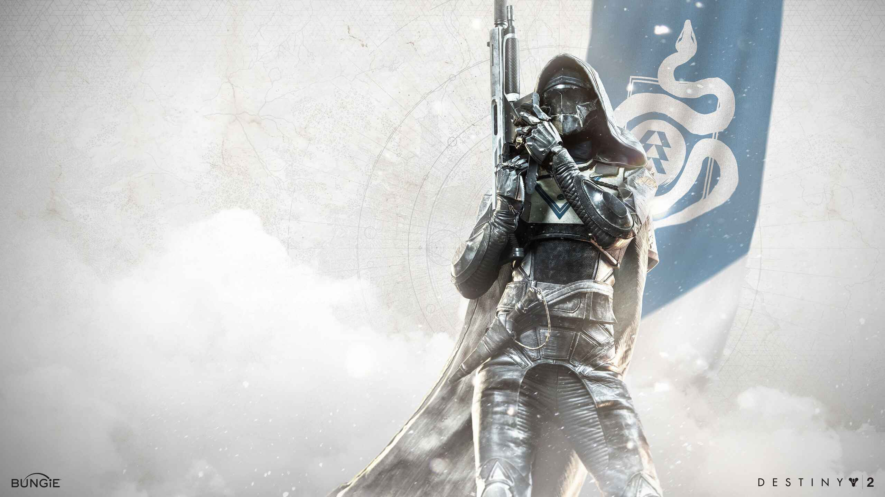

Destiny 2 Classes
Titans
The Titan class in Destiny 2 is known for its resilience, strength, and ability to control the battlefield. Titans are heavily armored and excel in close-quarters combat. They have access to unique abilities and subclasses that allow them to either tank damage, support their team, or deal massive damage to enemies. "The first Titans built the Wall, and gave their lives to defend it. Now, you stand in the same high place, steadfast and sure, protecting all who shelter in your shadow. You hail from a long line of heroes, forged from strength and sacrifice. Our enemies may be deadly and merciless, but so are you."

Warlocks
Known for its mastery of arcane powers, advanced technology, and strategic intellect. Warlocks harness the energies of the Traveler, a mysterious celestial entity that grants them supernatural abilities, to protect humanity and combat the various threats that endanger the universe. "Warlocks specialize in ranged melee attacks and cast elemental spells to eliminate their enemies."

Hunter
Last butt not least we have hunters. Known for its agility, precision, and mastery of the wilderness. Hunters are versatile scouts and marksmen who excel at ranged combat, stealth, and reconnaissance. They utilize a combination of advanced technology and innate abilities to best their enemies and strike with deadly precision. Hunters tend to be taciturn, mostly keeping to themselves and using lightweight throwing knives and smoke to disorient their enemies. Hunter Cloaks provide a sense of mystery and excellent camouflage when they are in the wild
